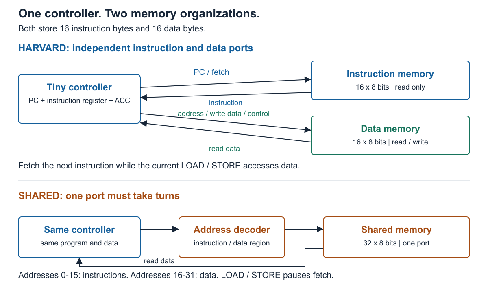
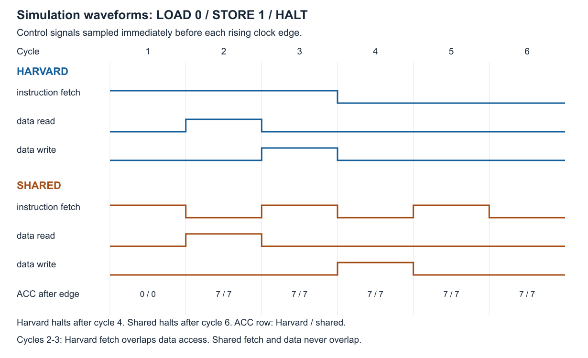

Instruction and Data Memory Hierarchy, explained from zero.
Team: Akshat Chauhan, Ajeesh Amreet, Vaibhav, Hardik Maheshwari, Mitul Bhatia. Phase I deadline: 16 November 2026, 11:59 PM IST.
Every number in this guide comes from a real simulation run (Icarus Verilog 13.0).
A processor keeps asking memory two different questions:
A cook needs a recipe (instructions) and ingredients (data).
One counter hands out recipe steps. A different counter hands out ingredients. The cook can read the next recipe step while grabbing an ingredient. Nobody waits.
One window serves both. If the cook is collecting an ingredient, the next recipe step has to wait until the window is free.
We built both memory designs in Verilog (a language for describing digital hardware), gave them the same tiny processor, same program, same data, same total memory, simulated them, and counted the clock cycles each needs.
Many small microcontrollers (PIC, AVR) use separate instruction and data memories. Big CPUs usually present one shared memory but use separate instruction and data caches. That is why it is called a "memory hierarchy" project. The optional lower-level shared memory from the brief is deliberately left out, which the brief allows.
| Word | Meaning in this project |
|---|---|
| Instruction | A one-byte command such as LOAD, STORE, HALT. |
| Data | The value being worked on. Here: the number 7. |
| Memory | A table of bytes you read by address. Instruction memory: 16 bytes. Data memory: 16 bytes. |
| Port | One "door" into a memory: one address in, one value out per cycle. A single-port memory can serve only one access per cycle. |
| Clock / cycle | The heartbeat. Things change on the rising edge. In simulation one cycle is 10 ns (a test setting, not a measured hardware speed). |
| PC (program counter) | 4-bit counter holding the address of the next instruction to fetch. |
| Fetch | Reading the next instruction from memory. |
| IR (instruction register) | Holds the instruction that is running now while the PC already points at the next one. |
| ACC (accumulator) | One 8-bit register that temporarily holds a value. LOAD fills it, STORE empties it into memory. |
| Valid bit | execute_valid: "the IR holds a fresh instruction". Stops an old instruction from running twice when a fetch was blocked. |
| Harvard | Separate instruction and data memories with independent ports. |
| Shared / single-port | One memory, one port, instructions and data take turns. |
| Address decoder | In shared mode: picks the physical address. Instructions to 0-15, data to 16-31. |
| Stall / bubble | A cycle where the fetch is blocked, so nothing new enters the processor. |
| HALT | Instruction that stops the processor; it then makes no memory requests. |
| Testbench | Verilog code that runs the design and checks the answers automatically (tb/tb_memory_compare.v). |
| VCD / waveform | A recording of every signal over time that a viewer can plot. |
programs/demo.hex: 10 21 F0| High nibble | Instruction | What it does |
|---|---|---|
1 | LOAD a | ACC ← data[a] |
2 | STORE a | data[a] ← ACC |
F | HALT | Stop; no more memory requests |
0 | NOP | Do nothing |
| anything else | illegal | Stop and raise the fault flag |
LOAD 0 ; ACC = data[0] (data[0] starts as 7) STORE 1 ; data[1] = ACC (now data[1] is 7 too) HALT ; stop
"Fetch" really goes through memory: the PC supplies an address, the instruction memory returns the byte, and the byte is stored in the IR.
Having one instruction register is what lets the processor execute the current instruction while fetching the next. That overlap is the only pipelining in the design, and it is exactly what the Harvard memory makes possible.

| Harvard | Shared single-port | |
|---|---|---|
| Memory | 16-byte instruction + 16-byte data | One 32-byte memory |
| Ports | Two independent | One, taken in turns |
| Addresses | Each memory starts at 0 | 0-15 instructions, 16-31 data (address decoder) |
| Fetch during LOAD/STORE? | Yes, same cycle | No: data wins, fetch is blocked, PC holds |
| Same for both | Controller, program, starting data, total capacity (32 bytes), clock period | |
In the code, one parameter chooses the design: SHARED_BUS = 0 is Harvard, SHARED_BUS = 1 is shared (in rtl/memory_system.v). The same controller runs on both, so the only thing that differs is how the memory is wired.
Read each row left to right. Light box = fetching that instruction. Dark box = executing it.

Same story as lines going up and down. Blue (Harvard): fetch stays high while read and write pulse. Orange (shared): fetch drops every time read or write is high.
Why "empty" in cycles 3 and 5 (shared)? A blocked fetch leaves no fresh instruction, so the valid bit goes to 0 and the old LOAD is not executed again.
| File (rtl/) | Job | Used in |
|---|---|---|
program_counter.v | Counts up the instruction address, but only when a fetch is accepted. | Both |
instruction_memory.v | 16 bytes, loaded from programs/demo.hex. Read-only. | Harvard |
data_memory.v | 16 bytes, loaded from programs/data.hex. Read; write on the clock edge. Reset does not erase it. | Harvard |
read_write_control.v | Decodes the instruction's top nibble into LOAD / STORE / HALT / illegal. | Both |
simple_controller.v | The brain: holds IR, ACC, valid, halted, fault; decides when to fetch and when to read/write. | Both |
address_decoder.v | One-line mux: data access gives address 16-31, otherwise 0-15. | Shared |
shared_memory.v | 32 bytes behind a single port; same read/write behaviour. | Shared |
memory_system.v | Plugs the same controller into either memory arrangement. | Both |
tb/tb_memory_compare.v | Runs both designs side by side, counts cycles, and fails loudly if anything is wrong. |
programs/*.hex | The program (10 21 F0 ...) and the starting data (07 00 00 ...). |
results/ | Saved outputs: cycle table, CSVs, waveforms (.vcd). |
docs/, output/pdf/ | Explanations, requirement checklist, IEEE report (LaTeX source + PDF), figures, video script. |
Makefile | Shortcuts: make demo, make test, make figures, make report. |
Open rtl/simple_controller.v. Everything above comes from four lines:
assign data_read_enable = running && execute_valid && load;
assign data_write_enable = running && execute_valid && store;
assign fetch_enable = running && !stop_now && !(SHARED_BUS && data_access);
SHARED_BUS is 0, so that last part is always false: fetch never waits.fetch_enable = 0, so the PC does not advance (it only counts when a fetch is accepted).fetch_enable = 1, and the delayed instruction is fetched.physical_address = data_select ? {1'b1, data_address} // 16..31 : data
: {1'b0, instruction_address}; // 0..15 : instructions
The top bit of the 5-bit address says "instruction side" (0) or "data side" (1). That is the whole mapping.
cd MCA_Project make demo # the 6-cycle table, prints DEMO PASSED make test # all six scenarios, prints ALL TESTS PASSED (6 scenarios)
Install on macOS: brew install icarus-verilog. On Ubuntu/Debian: sudo apt-get install iverilog make python3.
| # | Scenario | Why it exists | Harvard | Shared |
|---|---|---|---|---|
| 1 | demo: LOAD 0, STORE 1, HALT | The main comparison | 4 | 6 |
| 2 | address boundaries | Uses data addresses 0 and 15; a STORE right before a LOAD of the same address | 6 | 10 |
| 3 | no data access: two NOPs, HALT | Shows the gain depends on the program | 4 | 4 |
| 4 | HALT only | Stops immediately, no traffic | 2 | 2 |
| 5 | illegal opcode | Stops with the fault flag set | 2 | 2 |
| 6 | reset and restart | Reset mid-program, memory kept, restart, longer copy chain | 8 | 14 |
Cycle count starts at the first clock edge after reset is released and includes the HALT cycle.
results/demo_output.txt | The readable cycle table from make demo (F/R/W = fetch / read / write). |
results/test_output.txt, summary.csv | All six test results. |
results/demo.vcd | Waveform. Open in a viewer such as GTKWave (not installed on this Mac). Look under tb_memory_compare.h (Harvard) and .s (shared). |
output/pdf/HEXARCH_Phase_I_Report_Draft.pdf | 2-page IEEE-format report draft. |
iverilog -Wall, v13.0): zero warnings.build/, tmp/, .DS_Store are ignored).docs/VIDEO_SCRIPT.md said the GitHub repo was "not yet published". It is. Line corrected.docs/MEMBER_SCRIPTS.md.VIDEO.md.| Member | Own this part | A real improvement they could make |
|---|---|---|
| Akshat | Instruction memory, PC | Add a test: a program longer than 3 instructions, or one that checks PC wrap-around behaviour |
| Ajeesh | Data memory, read/write control | Add a test that reset keeps memory; document the read/write timing in a short note |
| Vaibhav | Shared memory, address decoder | Add an annotated example showing the physical address for LOAD 0 and STORE 1 in shared mode |
| Hardik | Testbench, waveforms | Add a new scenario with its measured cycle count and a short waveform note |
| Mitul | Integration, report, video | Final report update, video link in VIDEO.md, repository access check |
Never split existing files into fake commits or commit as someone else.
| Question | Short answer |
|---|---|
| What is a Harvard architecture? | Separate memories and buses for instructions and data, so both can be accessed in the same cycle. |
| What is the shared alternative called? | Von Neumann style: one memory for both. With a single port, only one access per cycle. |
| Why 4 cycles versus 6? | Two of the program's instructions (LOAD, STORE) use data memory. In shared mode each blocks the next fetch for one cycle: 4 + 2 = 6. |
| Is Harvard always faster? | No. With no data accesses both take 4 cycles (our no-data test). It helps when fetch and data access would compete. |
| Why is there a valid bit? | When a fetch is blocked the IR still holds the old instruction. The valid bit says "nothing new", so it does not run twice. |
| Why only one instruction register? | That is enough to overlap "execute current" with "fetch next", which is all the demo needs. |
| What does reset do? | Clears PC, ACC, IR, valid, halted, fault and stops memory requests. Memory contents are kept (tested). |
| What happens with an unknown opcode? | The controller halts and sets the fault flag (tested). |
| What if a program has no HALT? | The 4-bit PC wraps after 16 instructions and the program repeats. The unused image bytes are filled with HALT (F0) to avoid this in our programs. |
| How do you know both designs are fair? | Same controller, same program and data, same 32-byte total, same clock period. Only the memory wiring differs. |
| How did you verify correctness? | An automatic testbench with six scenarios checks every data word, access counts, PC behaviour, port ownership and halt behaviour. |
| What is not covered? | Caches, branches, a full instruction set, synthesis or FPGA measurement, real clock speed. The optional lower-level shared memory is omitted. |
| Did you use AI? | The repository states starter code and drafts were prepared with AI assistance. Be ready to explain your own part and your own commits honestly. |
| What does F/R/W mean in the output? | Instruction fetch / data read / data write. |
results/demo.vcd. Show clk, pc, instruction_register, execute_valid, fetch_enable, data_read_enable, data_write_enable, accumulator, halted for both h and s.fetch_enable line in simple_controller.v, then address_decoder.v.Total about 470 words, roughly 3 min 35 s at a relaxed pace (the limit is 5 minutes). Read your part twice, then practise it with the screen action. Keep all five names visible on screen. The same text is saved in docs/MEMBER_SCRIPTS.md.
docs/figures/architecture.png, pointing at the Harvard half.programs/demo.hex.rtl/address_decoder.v and the fetch_enable line in rtl/simple_controller.v.make demo. Then show docs/figures/waveforms.png or open results/demo.vcd.make test. Show the six PASS lines, the report PDF and the repository.make demo and make test on their own laptop first.clear before make demo.VIDEO.md.